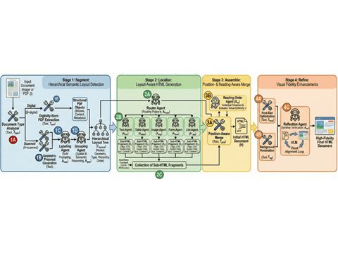
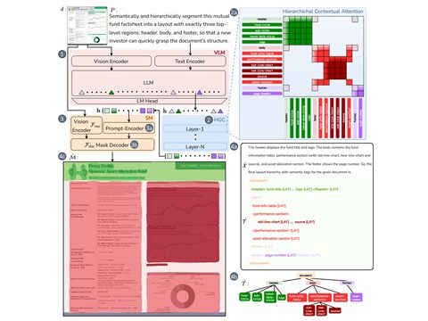
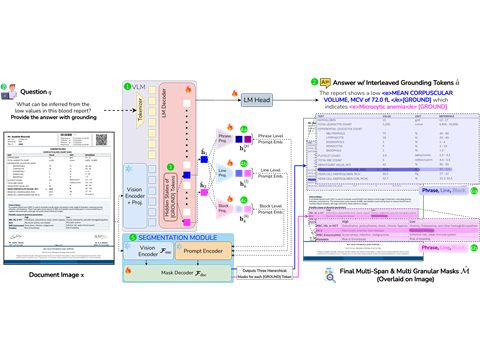
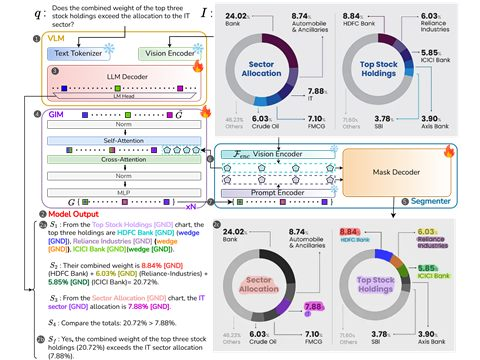
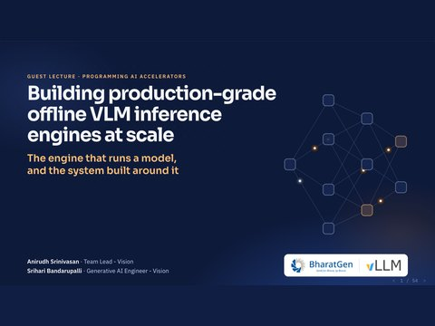
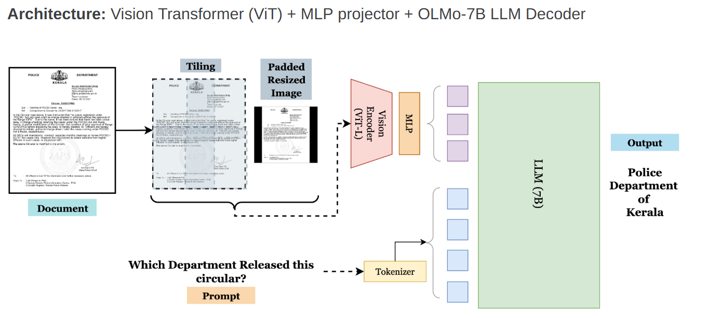
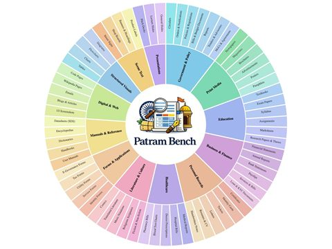
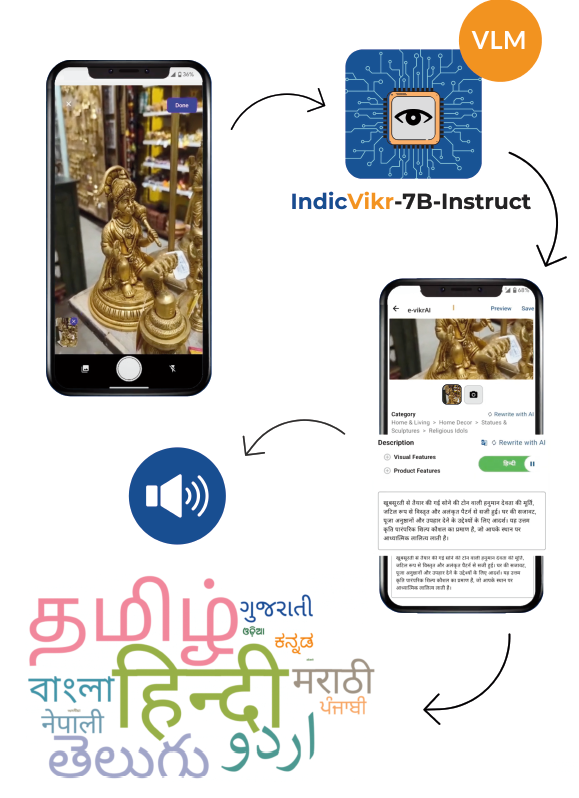

Research
My work follows three research interests. My research has appeared at venues including CVPR, ECCV, and ICDAR.
Research interest 01
Grounded document intelligence
Turning pages into text without losing information, and grounding answers in the page with masks.
Thesis · talk and blog · REPLICA, M3Grounder, DoCoG and DocLayout-VL
Thesis. Converting a document to text loses information, so we built a text representation that keeps everything on the page (text, hierarchy, position and style) for downstream workflows and large-scale data generation. And asking a model to type out coordinates is a brittle way to ground an answer: people do not recite coordinates, they mark the page. And a single point is not enough for documents, where evidence is a paragraph, a table row or a curved line, so we give the VLM a smart highlighter. It decides what to ground and at what granularity, and SAM highlights where on the page as a mask, trained end to end. The first idea generates the data for the second, and DocLayout-VL feeds back into REPLICA to close the loop.
↺ DocLayout-VL feeds back into REPLICA’s first stage, closing the loop.

Anirudh Srinivasan*, R Raghuveer*, Venkata Kesav Venna*, Tallapragada Sreevatsa, Aryan Jain, Sahithi Kukkala, Ravi Kiran Sarvadevabhatla
Oral at ICDAR '26, pp. 505-522
description
An agentic document parsing workflow that generates visually faithful HTML from documents. It combines a segmenter, router and specialist agents, a reading-order agent, and a reflection agent, reaching 93% visual fidelity and strong scores on VFDR-Bench.

Anirudh Srinivasan*, Venkata Kesav Venna*, Srihari Bandarupalli*, R Raghuveer, Sai Madhusudan Gunda, Ravi Kiran Sarvadevabhatla
Poster at ECCV '26, pp. 275-296
description
Reframes document layout understanding as promptable, open-set hierarchical segmentation. The system generates layout trees and dense masks using a VLM plus segmentation model with hierarchy-aware grounding, trained on 2.5M documents, 400K+ labels, and 80M masks.

Venkata Kesav Venna*, Sai Madhusudan Gunda*, Jyothi Swaroopa Jinka†, Hrithik Sagar Rachakonda†, Anirudh Srinivasan, Ravi Kiran Sarvadevabhatla
Poster at CVPR '26, pp. 23685-23695
CVPR 2026 workshops: DataMFM · MMFM5 · GRAIL-V (Highlight)
description
A VLM for grounded document intelligence that answers DocVQA questions with interleaved grounding tokens and pixel-level masks. It introduces multi-span, multi-granular, and multi-type grounding over textual and graphical elements, scaling to 200K documents and 2M grounded QA pairs.

Sai Madhusudan Gunda*, Jyothi Swaroopa Jinka*, Hrithik Sagar Rachakonda*, Aryan Jain, Venkata Kesav Venna, Anirudh Srinivasan, Ravi Kiran Sarvadevabhatla
Spotlight at ECCV '26, pp. 308-327
description
A mask-based grounded chain-of-thought framework for document QA that supports multiple grounding types across text and visual elements. The model is designed for chart-heavy and layout-rich documents where answers require both reasoning and fine-grained localization.
Research interest 02
VLM infrastructure
The whole stack that builds sovereign vision foundation models, from storage to evaluation.
Thesis · the systems behind Patram
Thesis. Investment in infrastructure builds runway. When everything is a config change, we experiment faster and run many experiments in parallel. Flexible, customisable infrastructure makes novel experiments and scaling easy, where experiment-specific code would make each one a new project. A sovereign AI company is not only sovereign models. It also builds sovereign infrastructure and the ecosystem around it. This is the piece with the fewest papers and the least open-source material, because it stays with frontier model companies as a trade secret. So we build systems that scale and make the GPUs go brrrrr.
- EvaluationPatramBench · Patram-Eval
- Serving infrastructurePatram-Serve
- ModelsPatram Suite
- Training infrastructurePatram-Core
- Training data generationPatram-Ingest
- Raw data collectionPatram-Scraper · Patram-SynAnnotation & visualizationDarshinAI
- StoragePatram-FS · Patram-DB

Guest lecture, Programming AI Accelerators, IIIT Hyderabad · also presented at the vLLM Meetup Mumbai 2026
description
Patram-Ingest wraps vLLM in durable execution so data-generation runs that last weeks keep GPUs busy, survive crashes and node failures, and run graphs of stages. It generates training data at the scale a foundation model needs: 100TB+ of image data, 100M+ training examples and 100B+ tokens of model output on 500+ GPUs.
Research interest 03
Sovereign foundation models
The Patram series: Patram, India’s first VLM for document understanding, and Patram-Bench, its benchmark. Also e-vikrAI, Indic VLMs for e-commerce.
Thesis · why Patram is its own foundation model
Thesis. There are two ways to handle a document. We can run OCR and then treat the page as an LLM or text-RAG problem. Or we can treat the document as an image. We believe in the second. OCR loses information on the way from image to text: structure, positions, layout, styling. Handling the page end to end is always better.
- Understand the science. Building from scratch lets us learn how LLMs are really built, and discover the recipes for state-of-the-art foundation models.
- Answer open questions. Public papers, technical reports, blogs and code repos leave many questions unanswered. We go step by step with structured experiments to find what matters when building vision-language models. Each experiment is designed to give an insight into something that affects model quality.
- Build what does not exist. We custom-build foundation VLMs to bring first-of-their-kind capabilities to the world: mask-based, multi-span, multi-granular grounded document VQA (M3Grounder); step-wise grounded chain-of-thought across text, tables, charts and flowcharts (DoCoG); and open-set, hierarchical, promptable layout segmentation (DocLayout-VL). No off-the-shelf VLM offers these, so the architecture and design choices are very different.
- Solve the grand document AI challenge. It spans 100+ document AI tasks across perception and reasoning, many languages, and 150+ document types across 20+ domains, with the challenges that come with that.

Launched at BharatGen Summit '25
description
Patram is a vision-language model for Indian document understanding, built over BharatDocs, a large Indian document corpus with 20M+ documents and 250M+ pages across English and 22 Indian languages.
- Pre-trained on 1M+ images for captioning, followed by 500K VQA annotations across 20+ document VQA task types.
- Built a multi-stage Synthetic QA pipeline using Qwen2.5-VL-72B-Instruct for extractive and abstractive QA, followed by verification and deduplication.
- Achieved state-of-the-art performance on key DocVQA benchmarks, including DocVQA and VisualMRC.

Anirudh Srinivasan*, Pratyush Jena*, Arya Topale, Venkata Kesav Venna, Ravi Kiran Sarvadevabhatla
Poster at ICDAR '26, pp. 626-642
description
A comprehensive Indian document understanding benchmark with 52,607 documents, 23 languages, 13 domains, 71 classes, 52 tasks, and 2.4M+ QA annotations across OCR, parsing, layout, and multi-hop DocVQA. It also introduces multilingual robustness metrics and evaluates 29+ VLMs.

Presented at India Mobile Congress '24
description
e-vikrAI is an e-commerce VLM for auto-cataloging, generating SEO-optimized titles, hierarchical categories, descriptions, and product metadata directly from product images.
- Built a scalable e-commerce scraper for 22.8M+ products, covering category, product, metadata, and image pipelines with checkpointed resume and high-throughput ingestion.
- Developed a PoC mobile app with multilingual translation and text-to-speech for improved accessibility.
- Reduced cataloging time from 10 min/product manually to 6 sec/product, supporting seller onboarding for rural and non-English-speaking users.